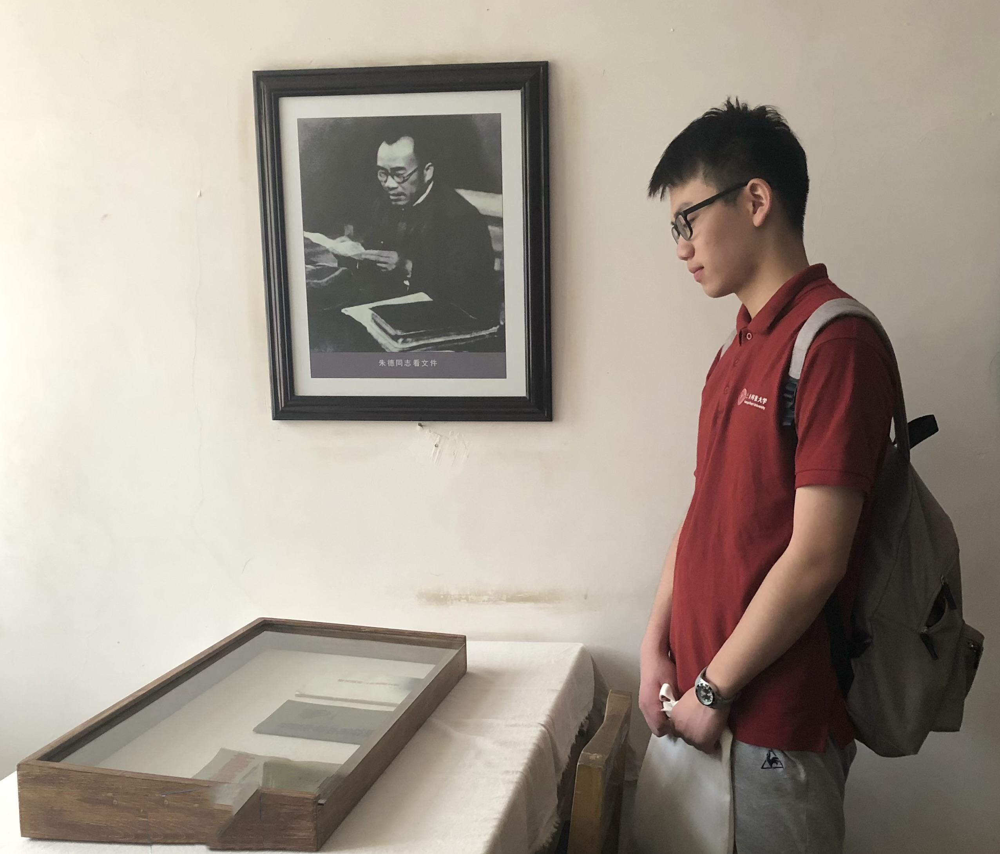

I am currently a second-year master student at Visual & Data Intelligence Center of ShanghaiTech University, supervised by Prof. Lan Xu. I am also fortunate to work closely with Prof. Jingyi Yu, Prof. Jingya Wang and Prof. Yuexin Ma. Before graduate study, I received my bachelor's degree from ShanghaiTech.
My research interests include: 3D computer vision/graphics; Human-centric motion understanding; Multimodal learning.
Email / Google Scholar / Github / ORCID


Chengfeng Zhao, Juze Zhang, Jiashen Du, Ziwei Shan, Junye Wang, Jingyi Yu, Jingya Wang, Lan Xu
IEEE Conference on Computer Vision and Pattern Recognition (CVPR), 2024.
Project Page / arXiv / Code / Dataset / Video /
@InProceedings{zhao2024imhoi,
author = {Zhao, Chengfeng and Zhang, Juze and Du, Jiashen and Shan, Ziwei and Wang, Junye and Yu, Jingyi and Wang, Jingya and Xu, Lan},
title = {I'M HOI: Inertia-aware Monocular Capture of 3D Human-Object Interactions},
booktitle = {Proceedings of the IEEE/CVF Conference on Computer Vision and Pattern Recognition (CVPR)},
month = {June},
year = {2024},
pages = {729-741}
}Juze Zhang*, Jingyan Zhang*, Zining Song, Zhanhe Shi, Chengfeng Zhao, Ye Shi, Jingyi Yu, Lan Xu, Jingya Wang
IEEE Conference on Computer Vision and Pattern Recognition (CVPR), 2024.
Project Page / arXiv / Dataset / Video /
@InProceedings{Zhang_2024_CVPR,
author = {Zhang, Juze and Zhang, Jingyan and Song, Zining and Shi, Zhanhe and Zhao, Chengfeng and Shi, Ye and Yu, Jingyi and Xu, Lan and Wang, Jingya},
title = {HOI-M{\textasciicircum}3: Capture Multiple Humans and Objects Interaction within Contextual Environment},
booktitle = {Proceedings of the IEEE/CVF Conference on Computer Vision and Pattern Recognition (CVPR)},
month = {June},
year = {2024},
pages = {516-526}
}
Yiming Ren, Xiao Han, Chengfeng Zhao, Jingya Wang, Lan Xu, Jingyi Yu, Yuexin Ma
IEEE Conference on Computer Vision and Pattern Recognition (CVPR), 2024.
arXiv /
@InProceedings{Ren_2024_CVPR,
author = {Ren, Yiming and Han, Xiao and Zhao, Chengfeng and Wang, Jingya and Xu, Lan and Yu, Jingyi and Ma, Yuexin},
title = {LiveHPS: LiDAR-based Scene-level Human Pose and Shape Estimation in Free Environment},
booktitle = {Proceedings of the IEEE/CVF Conference on Computer Vision and Pattern Recognition (CVPR)},
month = {June},
year = {2024},
pages = {1281-1291}
}Yiming Ren*, Chengfeng Zhao*, Yannan He, Peishan Cong, Han Liang, Jingyi Yu, Lan Xu, Yuexin Ma
IEEE Transactions on Visualization and Computer Graphics (Proc. IEEE VR), 2023.
Project Page / arXiv / Code / Dataset / Video /
@article{ren2023lidar,
title={Lidar-aid inertial poser: Large-scale human motion capture by sparse inertial and lidar sensors},
author={Ren, Yiming and Zhao, Chengfeng and He, Yannan and Cong, Peishan and Liang, Han and Yu, Jingyi and Xu, Lan and Ma, Yuexin},
journal={IEEE Transactions on Visualization and Computer Graphics},
volume={29},
number={5},
pages={2337--2347},
year={2023},
publisher={IEEE}
}
Han Liang, Yannan He, Chengfeng Zhao, Mutian Li, Jingya Wang, Jingyi Yu, Lan Xu
The 37th AAAI Conference on Artificial Intelligence (AAAI), 2023.
arXiv / Video /
@inproceedings{liang2023hybridcap,
title={Hybridcap: Inertia-aid monocular capture of challenging human motions},
author={Liang, Han and He, Yannan and Zhao, Chengfeng and Li, Mutian and Wang, Jingya and Yu, Jingyi and Xu, Lan},
booktitle={Proceedings of the AAAI Conference on Artificial Intelligence},
volume={37},
number={2},
pages={1539--1548},
year={2023}
}- Graduate:
- 2024.03 “Outstanding Teaching Assistant”
- 2023.12 “Merit Student
- Undergraduate:
- 2022.06 “Outstanding Graduate of Shanghai”
- 2022.06 “Outstanding Graduate of ShanghaiTech University”
- 2021.12 “Outstanding Student Leader”
- 2021.12 “Outstanding Student”
- 2020.12 “Merit Student”
- 2023 Fall & 2022 Fall, CS280: Deep Learning, ShanghaiTech University
- 2022 Spring, CS100: Introduction to Programming, ShanghaiTech University
- 2021 Fall, CS130: Operating Systems, ShanghaiTech University
- 2021 Spring, SI100B: Introduction to Information Science and Technology, ShanghaiTech University
Master
ShanghaiTech University, Shanghai, China
2022.09 - now
ShanghaiTech University, Shanghai, China
2022.09 - now
Bachelor
ShanghaiTech University, Shanghai, China
2018.09 - 2022.06
ShanghaiTech University, Shanghai, China
2018.09 - 2022.06
High school
High School Affiliated to Nanjing Normal University, Nanjing, China
2015.09 - 2018.06
High School Affiliated to Nanjing Normal University, Nanjing, China
2015.09 - 2018.06